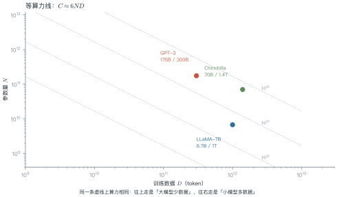
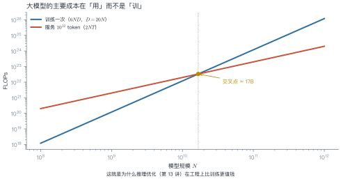
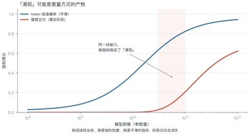
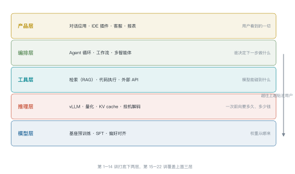

第 1 讲 大模型是什么¶
本讲位置
全书的入口。本讲不推导公式，只回答三个问题：什么叫"大"、能力从哪来、"涌现"是真的吗。之后第 2–3 讲回到历史，看这条路是怎么走过来的。
📅 事实核查至 2026-11
本讲引用的模型规格（GPT-3、Chinchilla、LLaMA）与涌现之争的两篇论文均已核对原文，见文末来源。
学习目标¶
学完本讲，你应该能够：
- 用参数、数据、算力三个轴描述一个模型，并估算它的训练算力；
- 解释"涌现能力"（emergent ability）为什么可能是度量方式的产物，并举出反例；
- 说出大模型应用栈的五层结构，以及每一层解决什么问题；
- 判断一个任务是否真的需要大模型。
0 直觉：三次跃迁¶
大模型不是"更大的神经网络"，它在三个尺度上同时跃迁：
| 维度 | 上一代 | 现在 | 变化 |
|---|---|---|---|
| 参数 | 1 亿（BERT-base） | 千亿–万亿 | \(10^3\)–\(10^4\) |
| 数据 | 30 亿 token | 10–20 万亿 token | \(5\times10^3\) |
| 算力 | \(10^{19}\) FLOPs | \(10^{23}\)–\(10^{25}\) | \(10^4\)–\(10^6\) |
三个数量级同时发生，才产生了质变。只放大其中一个——比如只堆参数不增数据——效果会明显打折（这正是第 6 讲 Chinchilla 要纠正的偏差）。
一句话总结
大模型 = 用海量文本做"下一个词预测"，把语言规律压缩进参数；规模足够大时，这种压缩本身就能支撑推理、翻译、写代码。
1 什么叫"大"：三个轴与一个公式¶
1.1 三轴¶
描述一个模型只需要三个数：
- \(N\)：参数量；
- \(D\)：训练用的 token 数；
- \(C\)：训练消耗的浮点运算次数（FLOPs）。
它们的关系近似为
为什么是 6？ 前向传播每个参数参与一次乘加，约 \(2N\) FLOPs/token；反向传播约为前向的两倍，合计约 \(6N\) FLOPs/token；乘上 token 数 \(D\) 就是 \(6ND\)。

例 1.1 手算 GPT-3 的训练算力¶
GPT-3：\(N=175\times10^9\)，\(D=300\times10^9\)。
第一步，代公式：
第二步，换算成 GPU 时间。 A100 的 bf16 峰值约 \(312\) TFLOPS \(=3.12\times10^{14}\) FLOPs/s：
第三步，按集群规模折算。 1024 张卡、40% 利用率（MFU，model FLOPs utilization，实际算力占硬件峰值的比例）：
这和公开报道的"约一个月"吻合。
从这个例子里能读出三件事
- 算力估算不需要看代码，三个数就能估个八九不离十；
- MFU 是关键变量：40% 是常见水平，优化到 50% 等于省 20% 的钱；
- 显存比算力更早成为瓶颈：175B 参数用 bf16 存要 \(175\times10^9\times2\,\text{B}=350\) GB；加上 Adam 的一阶、二阶动量与 fp32 主权重（每参数 \(2+4+4+4=14\) 字节），单是模型状态就要 \(175\times10^9\times14\approx2.45\) TB。
def train_cost(n_params: float, n_tokens: float, gpus: int = 1024,
mfu: float = 0.4, peak_flops: float = 3.12e14):
"""返回 (总 FLOPs, 训练天数)。默认按 A100 bf16 峰值与 40% 利用率。"""
flops = 6 * n_params * n_tokens
seconds = flops / (peak_flops * gpus * mfu)
return flops, seconds / 86400
flops, days = train_cost(175e9, 300e9)
print(f"{flops:.2e} FLOPs, 约 {days:.0f} 天") # 3.15e+23 FLOPs, 约 28 天
1.2 一个模型的三张账单¶
同样一个 70B 模型，训练、微调、推理是三种完全不同的开销结构：
| 场景 | 算力公式 | 量级（70B） | 特点 |
|---|---|---|---|
| 预训练 | \(6ND\) | \(10^{24}\) FLOPs | 一次性，最大 |
| 全参微调 | \(6ND_{\text{sft}}\) | \(10^{22}\) FLOPs（\(D_{\text{sft}}\approx2\times10^{10}\)） | 数据少，但显存同训练 |
| LoRA 微调 | \(\approx 6N_{\text{adapter}}D\) | \(10^{19}\) FLOPs | 显存降一个数量级 |
| 推理 | \(2NT\) | \(2\times70\times10^9\times T\) | 随调用量线性增长 |
三者的工程含义完全不同：
- 预训练是资本开支，一年做一次；
- 微调是研发开支，每周都可能做；
- 推理是运营开支，按 token 计费，用户越多越贵。
选型时最常犯的错，是拿"预训练成本"去论证"推理成本可控"——两者差着两三个数量级。
2 能力从哪来：一个目标函数¶
所有基座模型的预训练目标都一样：给定前文，预测下一个 token。
这个目标看起来简单得可疑——它怎么能同时学会语法、事实、推理？
一个有用的解释：要准确预测下一个词，模型必须隐式地建模产生这个词的所有因素。预测"法国的首都是___"需要事实知识；预测代码的下一行需要语法与类型约束；预测议论文的下一句需要论证结构。目标只有一个，被压缩进去的知识有很多种。

这张图的工程含义：模型越大，"用"比"训"越贵。所以推理优化（第 13 讲）在商业上比训练优化更值钱。
3 "涌现"是真的吗¶
3.1 两种说法¶
- Wei et al. (2022)：某些能力在规模达到阈值前几乎为零，之后突然出现，称为"涌现"（emergence）；
- Schaeffer et al. (2023)：这可能是度量选择的假象——换个更平滑的指标，阶跃就消失了。
3.2 为什么会这样¶
关键在于"任务对错误有多敏感"。考虑一个需要 8 步全部正确的任务：
- 每步正确率 0.55 → 整题全对概率 \(0.55^8=0.0084\)；
- 每步 0.85 → \(0.85^8=0.272\)；
- 每步 0.95 → \(0.95^8=0.663\)。
例 1.2 同一个能力，两种曲线¶
| 每步正确率 | 整题全对（exact match） | token 级正确率 |
|---|---|---|
| 0.55 | 0.84% | 55% |
| 0.85 | 27.2% | 85% |
| 0.95 | 66.3% | 95% |
每步正确率只是从 55% 平滑地爬到 95%，但"整题全对"这个指标却从 0.84% 跳到 66%——看起来就像突然"开窍"了。

从这个例子里能读出三件事
- 指标越严，曲线越陡：全对、pass@1 这类指标天然放大阶跃；
- "阈值"会随指标移动：换个指标，涌现点就从 10B 挪到 50B；
- 结论：说"某能力在 X 亿参数涌现"时，必须同时说明用什么指标测的。
3.3 那还剩下什么¶
即使"涌现"是度量假象，有两件事仍然成立：
- 能力确实随规模提升，只是曲线比传闻中平滑；
- 某些能力在特定规模以下确实不可用（比如长链推理），工程上仍要按"阈值"来做选型。
3.4 怎么自己验证"涌现"¶
别人说的阈值不一定适用于你的任务。三步就能自己测：
- 选一条规模序列：同一家族的小、中、大三档模型（如 1B / 8B / 70B），其他条件尽量一致；
- 用两种指标各测一遍：严格指标（全对、pass@1）与平滑指标（token 级准确率、编辑距离）；
- 画两条曲线：如果严格指标出现阶跃而平滑指标没有，那"涌现"就主要来自度量。
这个实验一周内能做完，比读十篇综述更有用。
既然如此，与其纠结阈值落在哪里，不如先看清整个系统里各层的分工——
4 应用栈：模型只是最下面一层¶

| 层 | 典型问题 | 对应讲次 |
|---|---|---|
| 产品层 | 交互怎么设计、怎么评测 | L23–L24 |
| 编排层 | 什么时候该让模型自己决定下一步 | L17–L18 |
| 工具层 | 知识从哪来、怎么调外部系统 | L16、L18 |
| 推理层 | 延迟、成本、并发 | L13–L14 |
| 模型层 | 预训练、对齐、能力边界 | L2–L12 |
一个重要判断：绝大多数"模型效果不好"的问题，其实出在上面三层。检索没做好、提示没写清、任务拆得不对——这些都不是换更大的模型能解决的。
5 三条主线¶
| 主线 | 关注点 | 代表讲次 |
|---|---|---|
| 规模线 | 参数、数据、算力如何共同决定能力 | L6、L13、L14 |
| 架构线 | 从 RNN 到 Transformer 到 MoE 到长上下文 | L3、L4、L5、L11、L12 |
| 对齐线 | 从"会说话"到"听话、有用、不危险" | L8、L9、L10、L21 |
三条线在应用层汇合：RAG、Agent、多模态都是"模型能力 × 系统设计"的乘积。
6 工程要点与坑¶
- 先算账再选型：用 (1.1) 估算训练/推理成本，别凭感觉选 70B。
- 参数不是唯一指标：同样 7B，数据质量差 10 倍，效果差一个档。
- 显存优先于算力：训练时先看模型状态能不能放下，再看 FLOPs。
- 推理成本随使用量线性增长：用户翻倍，账单翻倍，这和训练的一次性投入不同。
- 别迷信"涌现阈值"：阈值随指标与提示格式漂移，做选型要自己测。
- 小模型 + 好系统常常打败大模型：检索、工具、结构化输出能补上很多能力缺口。
7 论文与延伸¶
| 年份 | 论文 | 一句话贡献 |
|---|---|---|
| 2020 | Scaling Laws for Neural Language Models | 损失随规模幂律下降 |
| 2020 | GPT-3 | 175B 参数，少样本学习成为范式 |
| 2022 | Emergent Abilities of Large Language Models | "涌现"的经典论述 |
| 2022 | Chinchilla | 参数与数据应同比扩展 |
| 2023 | Are Emergent Abilities a Mirage? | 涌现可能是度量假象 |
| 2023 | LLaMA | 小模型 + 充分数据 |
8 习题¶
🟢 概念题
- 用一句话解释 \(C\approx6ND\) 里的 6 是怎么来的。
- 为什么说"推理成本随规模线性增长，训练成本随规模平方增长"？各自的工程含义是什么？
🟡 推导题
- 某模型 \(N=70\)B、\(D=1.4\)T，估算训练算力；若用 2048 张 A100、MFU 45%，需要多少天？
- 用 \(p^n\) 的形式说明：为什么"整题全对"指标的曲线比"每步正确率"陡得多？给出陡峭程度的表达式。
🔴 实现题
- 写一个脚本，输入 \((N, D)\) 输出训练算力、显存需求（bf16 + Adam）、以及 1T token 的推理算力，并与图 L1-2 的交叉点对照。
9 本讲小结¶
一个公式
两个判断
- "涌现"多半是度量假象：指标越严，曲线越陡
- 大模型的成本主要花在"用"，不在"训"
五层栈
产品 → 编排 → 工具 → 推理 → 模型
一句话
大模型是"用海量文本做下一个词预测"的产物；规模是必要条件，但不是全部。
来源¶
- GPT-3、Chinchilla、LLaMA 的规格与 Wei/Schaeffer 两篇论文的结论均核对原文，链接见 §7，核查日期 2026-11。